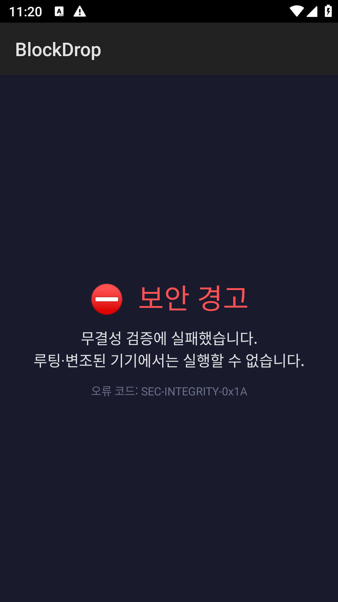
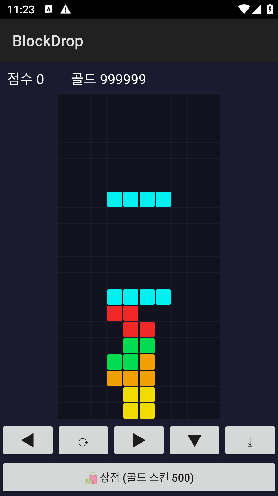
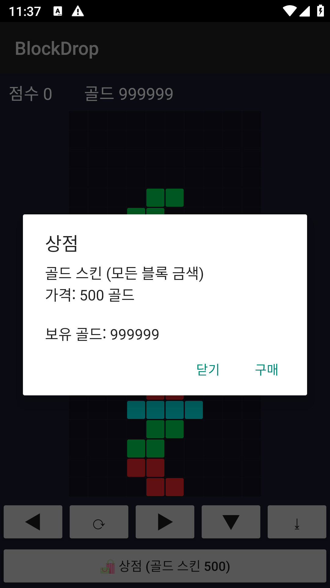
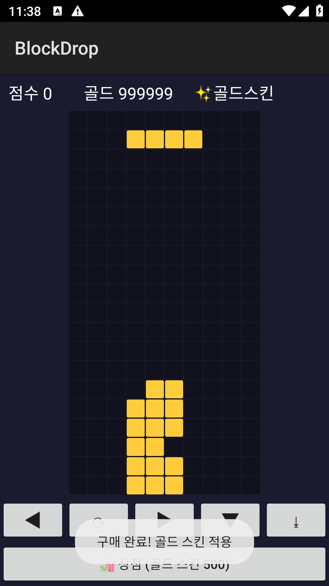

boolean/int 하나로 판정·저장한다. 그 함수를 jadx로 찾아 Frida로 반환값만 바꿔치기하면
루팅 차단이 무력화되고 골드가 999,999가 되어 상점을 무한 구매할 수 있다.
= 전형적인 클라이언트 사이드 신뢰(client-side trust) 취약점.
Java.use + .implementation)| 도구 | 용도 | 설치/다운로드 |
|---|---|---|
| LDPlayer (루팅 x86_64 에뮬) | 실행 대상. adb로 설치/조작 | 공식 사이트. 설정에서 root 켜기 |
| jadx (jadx-gui) | APK → Java 소스 정적 분석 | GitHub skylot/jadx 릴리스에서 zip 받아 jadx-gui 실행 |
| frida-server (기기용) | 기기 안에서 후킹을 실행하는 에이전트 | GitHub frida/frida 릴리스에서 android-x86_64 판 다운로드(에뮬 아키텍처와 일치) |
| frida-tools (PC) | spawn/attach 실행(frida CLI) | pip install frida-tools (Python) |
| frida-compile (PC) | 훅 스크립트 번들링 | npm i -g frida-compile (Node.js 필요) |
Java 브리지가 코어에서 제거됐다.
옛 튜토리얼처럼 그냥 Java.perform을 쓰면 ReferenceError: 'Java' is not defined가 난다.
→ 스크립트 맨 위에 import Java from "frida-java-bridge"를 넣고 frida-compile로 번들링해야 한다.
(이 저장소의 frida/blockdrop_hook.js는 이미 컴파일된 결과라 그냥 실행하면 된다.)
분석·후킹의 대상이 되는 BlockDrop.apk를 준비한다. 두 가지 방법:
# 저장소를 클론했다면(또는 GitHub에서 BlockDrop.apk 다운로드)
adb install -r BlockDrop.apk./build.ps1 # javac → d8 → aapt2 → zipalign → apksigner, 산출물 BlockDrop.apk (~16KB)
adb install -r BlockDrop.apkBlockDrop.apk가 곧 jadx로 열고(정찰), Frida로 후킹할(익스플로잇) 대상이다.
루팅된 에뮬에서 그냥 실행하면 다음 03에서 볼 "보안 경고"로 막힌다 — 그게 정상이고, 우리가 뚫을 지점이다.
순수 Java 앱이라 jadx로 소스가 그대로 보인다(난독화 없음). APK를 jadx-gui로 열고 Ctrl+Shift+F 전체 검색으로 흔적을 따라간다.
| 검색어 | 이유 | 도달 |
|---|---|---|
MainActivity | 런처 액티비티 = 시작점 | 루팅 분기 발견 |
루팅 / 보안 | 차단 화면 문자열로 역추적 | buildBlockScreen() |
클래스 트리 SecurityCheck | "Security"류 이름은 탐지기 후보 | 판정 함수 |
MainActivity를 열면 게이트가 한눈에 보인다:
// MainActivity.onCreate (jadx 뷰) — 핵심만
if (SecurityCheck.isDeviceRooted()) {
setContentView(buildBlockScreen()); // ⛔ 차단 (탈출 버튼 없음)
} else {
startActivity(new Intent(this, BlockDropActivity.class)); // 게임 진입
finish();
}SecurityCheck로 이동하면 판정 로직이 전부 노출된다:
// SecurityCheck.isDeviceRooted (jadx 뷰) — 핵심만
public static boolean isDeviceRooted() {
for (String p : SU_PATHS) // su/busybox 파일 존재?
if (new File(p).exists()) return true;
if (Build.TAGS != null && Build.TAGS.contains("test-keys")) return true;
return false; // ← 정상 기기면 여기
}boolean 하나다.
그리고 MainActivity는 그 boolean 하나만 보고 차단/통과를 정한다.
→ 후킹 지점 = isDeviceRooted()의 반환값을 false로.
Frida의 가장 기본 패턴: 함수의 implementation을 통째로 바꿔치기해서 항상 false를 돌려준다.
용어: Java.perform(fn) = 자바 런타임(VM) 안으로 들어가는 진입점(그 안에서만 자바 클래스를 만질 수 있다). Java.use("클래스명") = 그 클래스를 Frida에서 잡는 핸들. .메서드.implementation = 함수 = 원본 메서드를 우리 함수로 교체.
import Java from "frida-java-bridge"; // Frida17 필수
globalThis.Java = Java;
Java.perform(function () {
var SecurityCheck = Java.use("com.reversinglab.blockdrop.SecurityCheck");
// 원래 검사(su 파일 등)를 아예 실행하지 않고, 무조건 false 반환
SecurityCheck.isDeviceRooted.implementation = function () {
return false; // ← 이 한 줄이 루팅 게이트를 연다
};
});왜 되나? MainActivity가 isDeviceRooted()를 부르는 순간, 우리가 심은 함수가
원본 대신 실행돼 false를 준다 → if(false) → 차단 안 하고 게임으로 진입.
골드는 메모리의 int이고 서버 검증이 없다. jadx로 Wallet을 보면:
// Wallet (jadx 뷰)
public static int getGold() { return gold; } // 표시 + 잔액확인 공용
public static boolean spend(int amount) {
if (getGold() >= amount) { gold -= amount; return true; } // 잔액확인도 getGold()
return false;
}getGold()를 거친다.
→ 이 함수 하나만 큰 값으로 후킹하면 표시 골드 + 모든 구매가 뚫린다(무한 재화).
var Wallet = Java.use("com.reversinglab.blockdrop.Wallet");
Wallet.getGold.implementation = function () {
return 999999; // 표시도 999999, 잔액확인도 999999 → 무한 구매
};두 훅을 합친 최종 스크립트가 frida/blockdrop_hook_src.js다. (초보용 = return false / return 999999로 반환값만 뒤집는 헬로월드 패턴)
npx frida-compile frida/blockdrop_hook_src.js -o frida/blockdrop_hook.js
# (저장소엔 이미 컴파일본이 포함돼 있어 생략 가능)# (최초 1회) 다운받은 android-x86_64용 frida-server 를 기기에 넣고 실행권한 부여
adb push frida-server /data/local/tmp/frida-server
adb shell "su -c 'chmod 755 /data/local/tmp/frida-server'"
# 기동 + 포워딩 (이 랩은 비표준 포트 27043 사용 → 아래 실행에서 -H 로 접속)
adb shell "su -c 'setsid /data/local/tmp/frida-server -l 0.0.0.0:27043 </dev/null >/dev/null 2>&1 &'"
adb forward tcp:27043 tcp:27043※ 일반 튜토리얼은 기본 포트(27042)에 -H 없이 붙지만, 이 랩은 27043에 띄우므로 실행할 때 -H 127.0.0.1:27043로 명시한다.
frida -H 127.0.0.1:27043 -f com.reversinglab.blockdrop -l frida/blockdrop_hook.js
# 또는: python frida/driver_blockdrop.py-f(spawn)이고 attach(-p)면 안 되나? 루팅 검사는 앱이 뜨자마자
MainActivity.onCreate에서 돈다. 이미 실행 중인 앱에 나중에 붙으면(attach) 판정이 끝난 뒤라 못 막는다.
→ 우리가 앱을 띄우면서(spawn) 후킹해야 첫 판정을 가로챈다.




판정 기준: 후킹 전엔 "보안 경고 · 무결성 검증 실패"로 막히고, 후킹 후엔 차단 화면 없이 게임에 들어가며 상단 골드가 999,999로 표시된다. 상점에서 500 골드 스킨을 눌러도 잔액이 줄지 않고 계속 구매된다.
| 취약점 | 근본 원인 | 방어 |
|---|---|---|
| 루팅 우회 | 무결성 판정이 클라이언트에서만 일어남 (앱이 자기 자신을 검사) | 서버측 원격검증(Play Integrity API). 판정 로직/결과를 클라이언트에 두지 않기 |
| 골드 조작 | 재화가 클라이언트 상태(권위 없음) | 서버 권위 경제: 잔액·구매를 서버가 소유하고 클라는 표시만. 결제는 서버 영수증 검증 |
boolean/int는 신뢰할 수 없다.
온-디바이스 검사는 "장애물"일 뿐 "경계"가 아니다. 진짜 경계는 서버다.
| 증상 | 원인 / 해결 |
|---|---|
ReferenceError: 'Java' is not defined |
Frida17에서 원본 .js를 직접 로드함. 컴파일된 blockdrop_hook.js를 써야 함 |
| 차단 화면이 그대로 뜸 | attach로 붙음. -f로 spawn 다시 |
unable to find application ... | ① 앱이 기기에 설치 안 됨 → adb install -r BlockDrop.apk(02단계). ② 또는 패키지명 오타(com.reversinglab.blockdrop) |
Failed to connect ... frida-server | frida-server 안 떴거나 forward 안 됨. 06-② 다시(기동+adb forward) |
| (참고) 다른 앱에서 골드는 큰데 구매가 안 됨 | 이 앱은 spend()가 getGold()로 잔액을 보므로 getGold() 후킹만으로 충분. 단, 다른 타깃이 잔액을 별도 필드로 검사하면 spend()도 true로 후킹 |